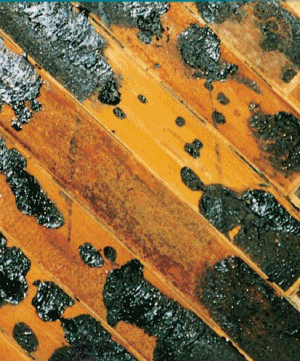

Altbeschichtungen können vor allem folgende Gefahrstoffe enthalten:
Alle diese Stoffe sind als "Verdacht auf krebserzeugend",
"krebserzeugend" oder "fruchtschädigend"
eingestuft.
Wenn diese Gefahrstoffe aus Altbeschichtungen freigesetzt werden können, haben
Bauherr (Auftraggeber) und Arbeitgeber (Auftragnehmer)
spezielle Pflichten.
Beim Auftreten gefahrstoffbelasteter Stäube
sind spezielle Schutzmaßnahmen zu beachten. Die
Arbeitsstelle ist in der Regel einzuhausen.